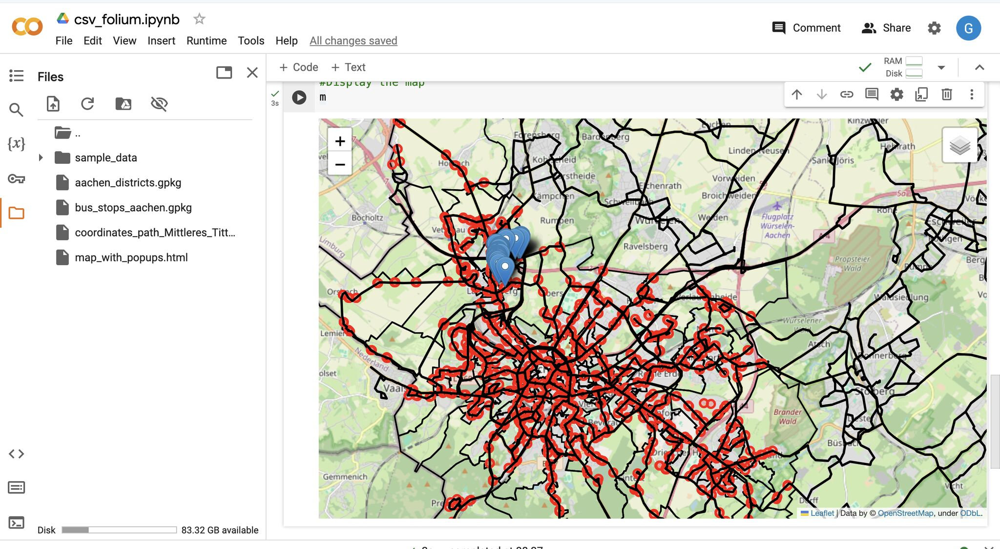
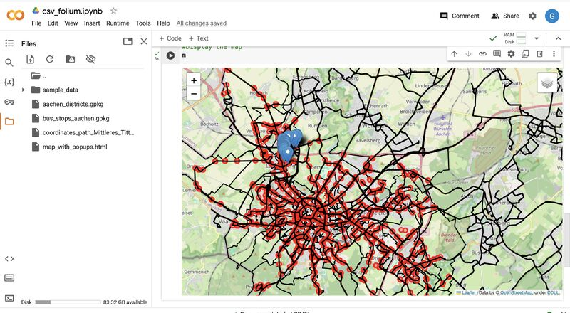

Overview
A practical demonstration of how Python can bridge the gap between raw data and spatial insights — no deep GIS expertise required. Starting from a public transportation dataset of new bus stops, this project visualises their distribution and evaluates their strategic placement using an accessible Python spatial analysis workflow.
The interactive map was generated with the help of ChatGPT, showcasing how AI tools can accelerate spatial workflows for data analysts.
Methodology
Data Preparation
Loaded and cleaned the bus stop dataset using Pandas, structuring the raw tabular data ready for spatial processing.
Spatial Data Handling
Used GeoPandas to convert the dataset into spatial features, enabling geographic operations and distribution analysis.
Interactive Mapping
Built an interactive map with Folium to visualise bus stop distribution and evaluate the strategic placement of stops across the study area.
Collaboration & Sharing
Ran the full workflow in Google Colab for seamless execution and easy sharing without local environment setup.


Tools & Technologies
- Python — Pandas, GeoPandas, Folium
- Google Colab — collaborative notebook environment
- ChatGPT — assisted with interactive map generation
- Spatial Thoughts — tutorials and methodology guidance
Outcome
Transformed a raw bus stop dataset into an interactive spatial visualisation, demonstrating how fundamental Python tools can unlock actionable geographic insights — even without deep spatial expertise.